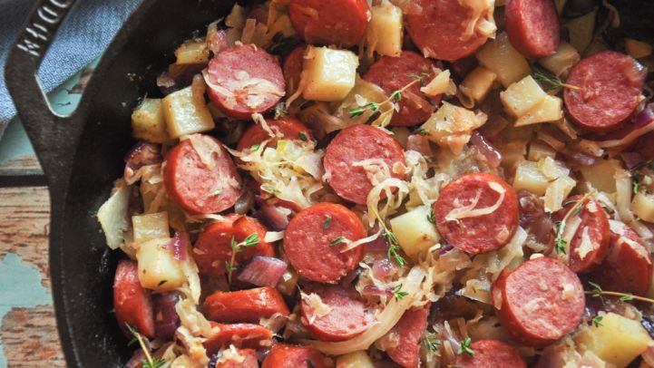

Smokey Kiebasa

Why kielbasa?
Kielbasa is a delicious and smokey sausage that makes a hearty and earthy meal.
Ingredients:
1.5# kielbasa
2tb butter
3tb sugar
1 onion, sliced
2 sweet potato, chopped
3c sauerkraut, drained
fresh chopped parsley
honey mustard
Preparation:
Preheat the grill to 400 degrees F.
Cut kielbasa and grill for 4-5 minutes until evenly charred the ntransfer to a baking sheet.
Add butter, sugar, sweet potato and onions to carmelize. Add sauerkraut until wilted.
Toss together and serve with honey mustard.
Enjoy!